Here are some codes I have written, I hope you will like them.
First.
Installing all the tools needed to develop the software
1.Git:It serves as a control system for tracking changes to the code base, collaborating, managing
project versions, which allows us to clone, commit, and push changes to GitHub.
2.Github:For our website,we utilize the github service.
3.Github Desktop: To move or push our coding from local to GitHub, we used github desktop.
4.VScode:We used the Visual Studio code to write down our documents.
5.Markdown and Html language:to write our document.
6.CSS: Corresponds with html. Used to style the website
Second
Open this website and click here
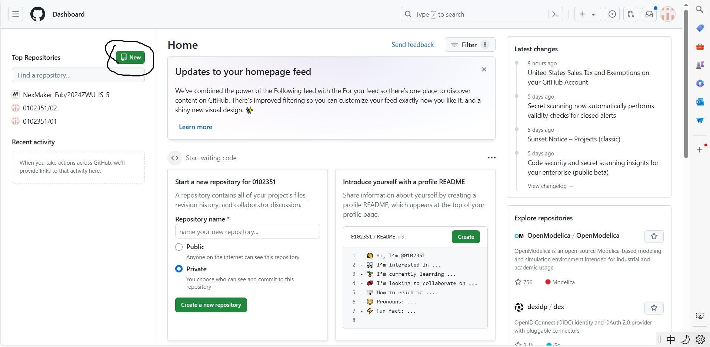
Set your warehouse name and click on the two buttons below
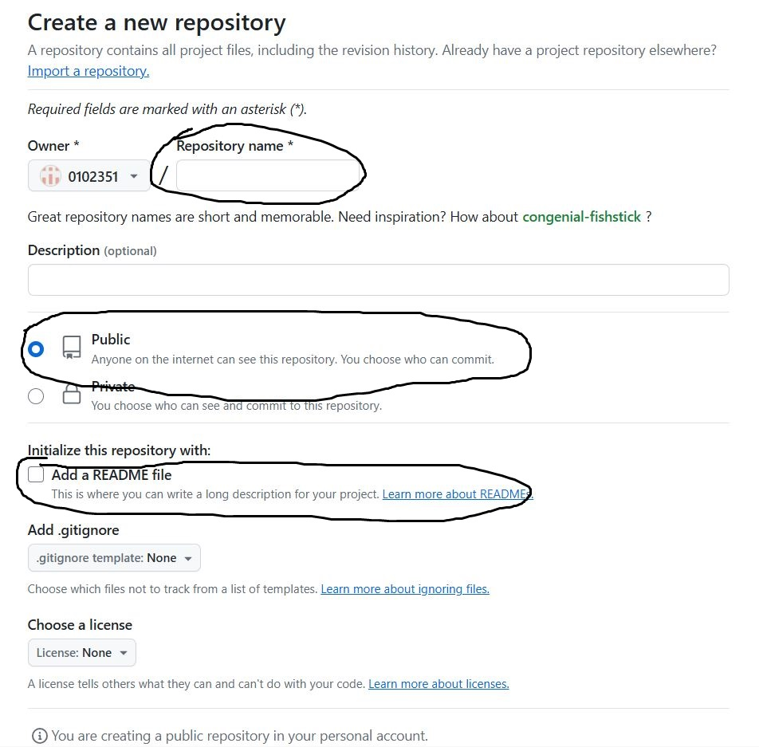
Find your library and click on it
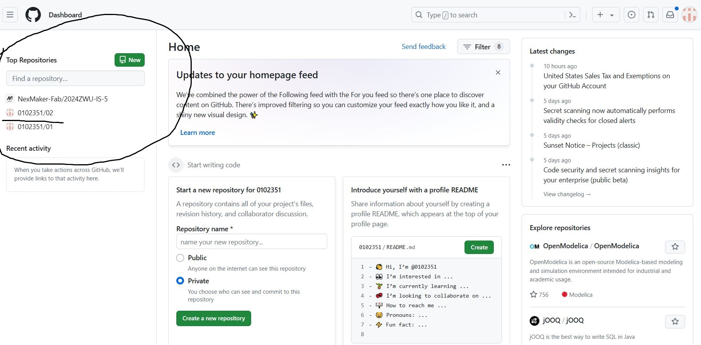
Click on Settings, then click on the webpage and
set the location of your library in the order of 123. Okay, a basic library prototype is completed
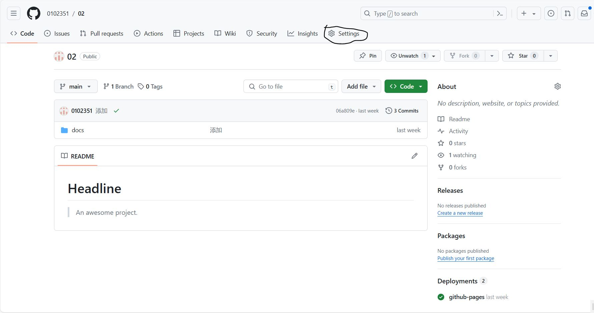
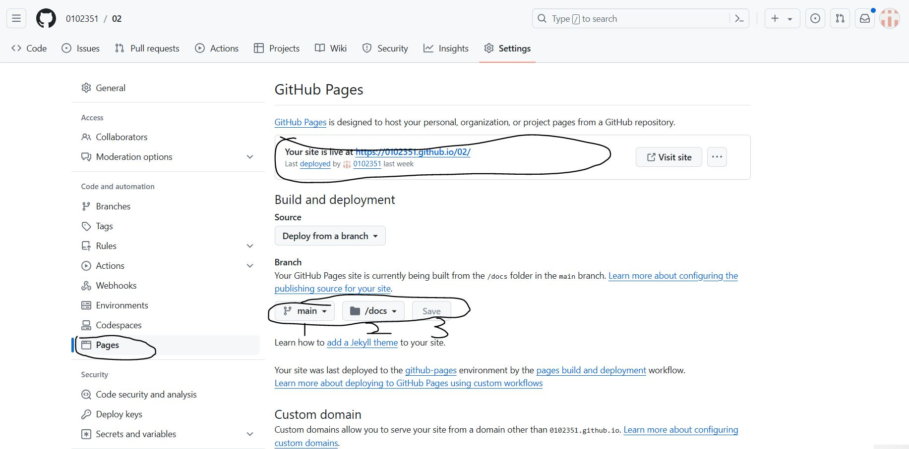
Thrid
open your Github Desktop!Look at the black circles and create a new library
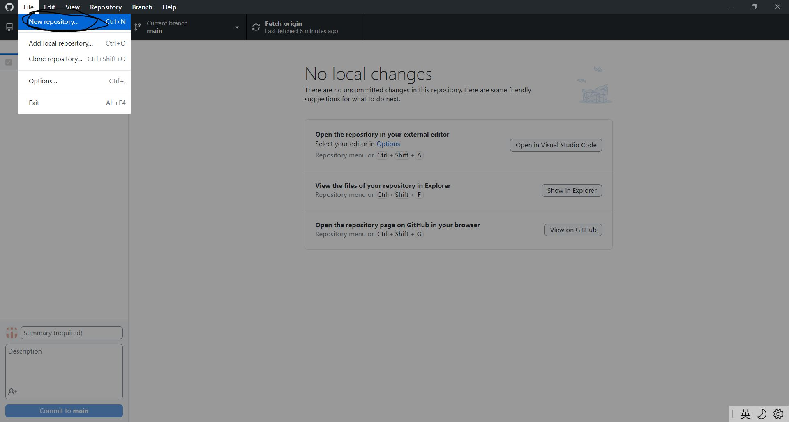
Do you remember the library you just created on the webpage? Find its way to clone it
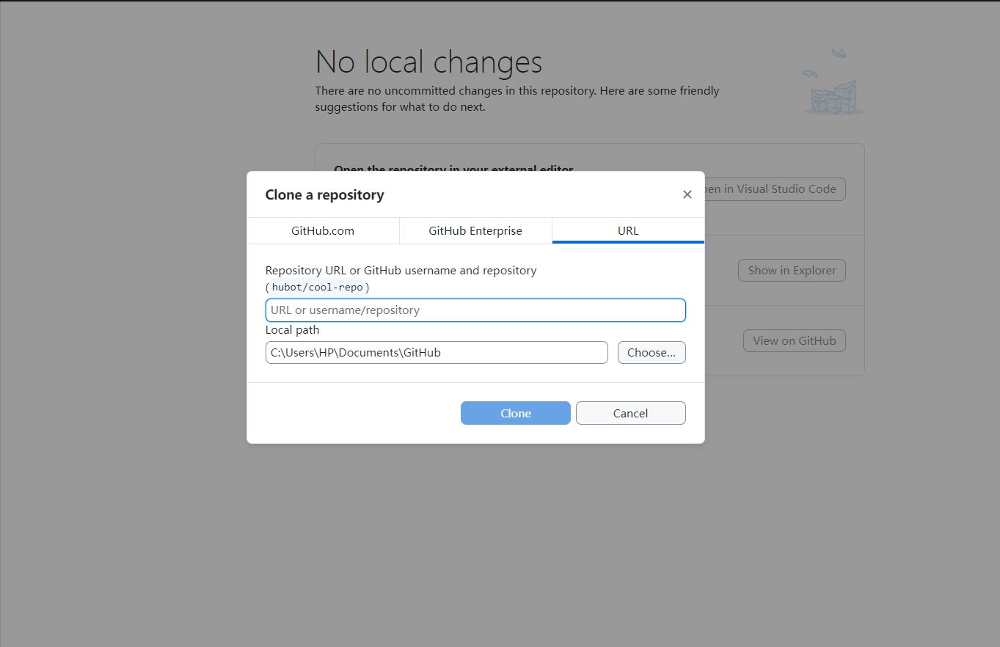
like it
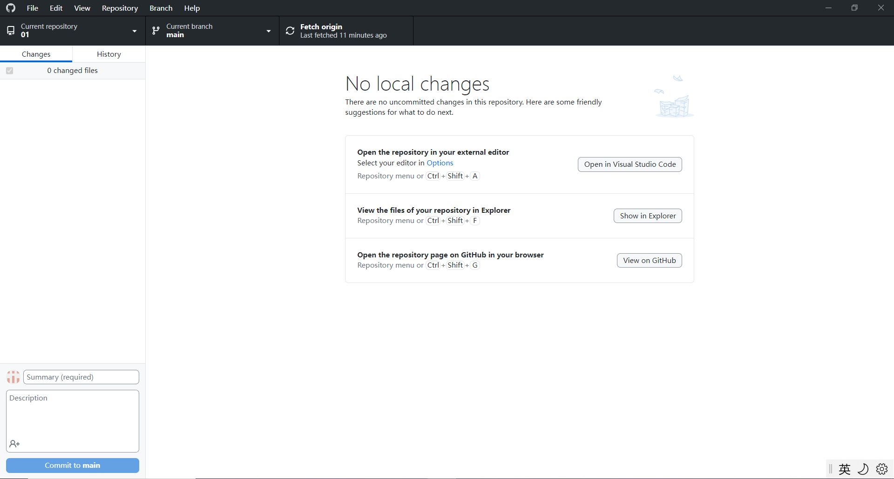
fourth
Now let's open VS code and start making your own webpage seriously!
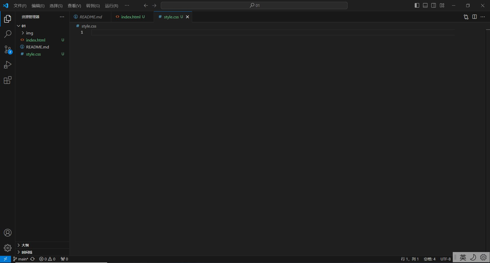
let's analyze the overall layout of the webpage, including three parts: text, background color, background image, and links
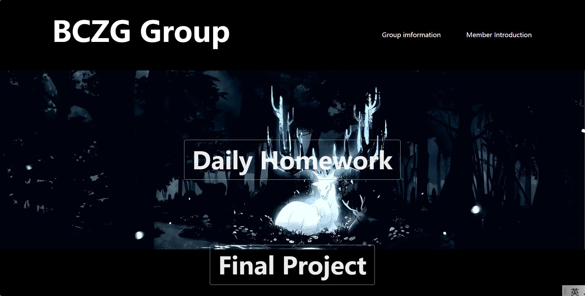
For this, you need to write two sided code in VS, which is the two sided code I will show next
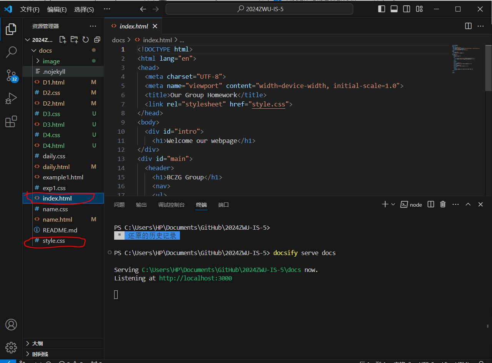
HTML is the core of a webpage, and key information needs to be input from it. CSS is mainly responsible for polishing web pages
!DOCTYPE html
html lang="en"
head
meta charset="UTF-8"
meta name="viewport" content="width=device-width, initial-scale=1.0"
title Our Group Homework /title
link rel="stylesheet" href="style.css" //将index.html和style.css联系在一起
/head
body
div id="intro" //定义id，使得css中可以使用intro修改开头动画属性
h1 Welcome our webpage /h1 //开头动画文字展示
/div
div id="main"
header //网页头部
h1 BCZG Group /h1
nav
ul
li a href="example1.html" Group imformation /a /li //类似代码作用：为文字添加链接，点击文字可链接到相应的HTML
li a href="name.html" Member Introduction /a /li
/ul
/nav
/header
main //网页中心部分
section class="w1" //用section分类相同前置条件（比如同一字体同一位置）的代码文字，也可重复利用
h2 a href="daily.html" Daily Homework /a /h2
/section
section class="w2"
h2 a href="#" Final Project /a /h2
/section
/main
footer //网页尾部
h6 The webpage was created by the BCZG team /h6
/footer
/div
/body
/html
@keyframes fadeOut {
from {opacity: 1;}
to {opacity: 0;}
}
@keyframes fadeIn {
from {opacity: 0;}
to {opacity: 1;}
}
#intro {
animation: fadeOut 3s forwards; // forwards 保证动画结束后，元素保持结束状态
position: absolute;
width:100%;
height: 120vh;
display: flex;
align-items: center;
justify-content: center;
background-color:white;
}
#intro h1{
color:black; //设置文字颜色为黑色
}
#main {
animation: fadeIn 3s forwards;
animation-delay: 3s; // 动画延迟3秒开始，对应 intro 结束 //
opacity:0;
height: 100vh; //设置部分高度
background-color:#fff; //设置背景颜色为黑色
}
*{
padding:0; //设置网页初始状态
margin:0;
}
header{
background-color: black;
height:180px;
width:100%; //设置网页头部宽度
}
h1{
color:white;
font-size: 72px; //设置字体大小
}
header h1{
position:absolute; //取字体位置为绝对位置
right: 60vw; //距离网页右端距离设置为60vw
top:0vw; //距离顶端距离设置为0vw
line-height: 160px;
}
header ul{
position:absolute;
right:5vw;
top:0vw;
line-height:180px;
}
header li{
display:inline;
margin-right: 4vw;
}
header a{
color:white;
text-decoration:none; //取消超链接下端黑线
}
header a:hover{
text-decoration:underline; //归还超链接下端黑线
}
main a{
color:rgba(255, 255, 255, 0.925);
text-decoration:none;
}
main a:hover{
text-decoration:underline;
}
.w1{
background-color: blanchedalmond;
color:white;
height:60vh;
background-image: url("image/11.jpg"); //设置背景图片为超链接image文件夹里名为11的jpg文件
background-size: cover; //背景颜色覆盖
background-repeat:no-repeat;
background-position:center;
display: flex;
flex-direction: column;
align-items: center;
justify-content: center; //设置各项数据居中，并与所处位置相对应
}
.w1 h2{
font-size: 60px;
}
.w1 a{
border: 1px solid #ACACAC; //边缘线设置，宽窄和颜色设置
padding: 10px 20px;
border-radius: 5px; //边缘线圆弧化
}
.w2{
background-color: black;
color:white;
height: 40vh;
display: flex;
flex-direction: column;
align-items: center;
}
.w2 h2{
font-size: 60px;
}
.w2 a{
border: 1px solid #ACACAC;
padding: 10px 20px;
border-radius: 5px;
}
footer h6{
background-color: black;
color: white;
display: flex;
flex-direction: column;
align-items: center;
}
Enter some text in 1, such as uploading all files, and then click on 2
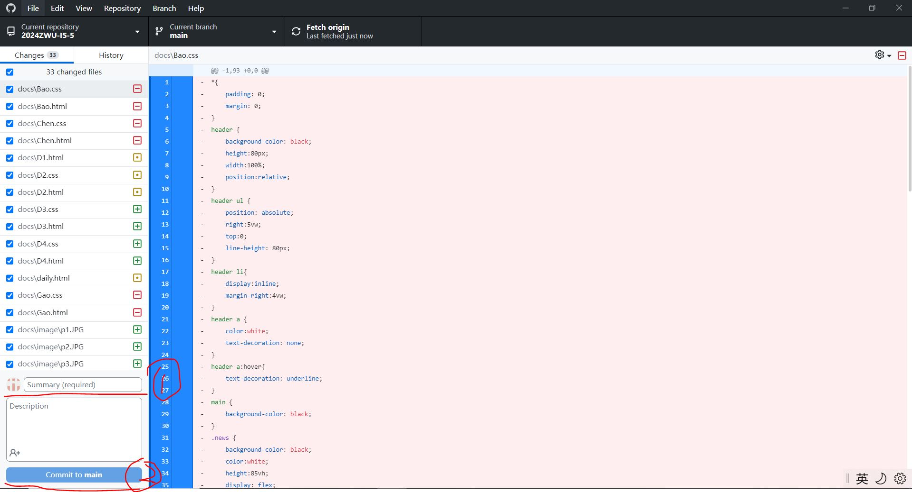
When you click on 1, you will upload everything you have done to the cloud;
When you click on 2, you can open VS code again and immediately continue to modify your own code;
When you click on 3, the folder containing your webpage content will be opened, and you can check for any missing errors;
When you click on 4, it will open the web version of GitHub
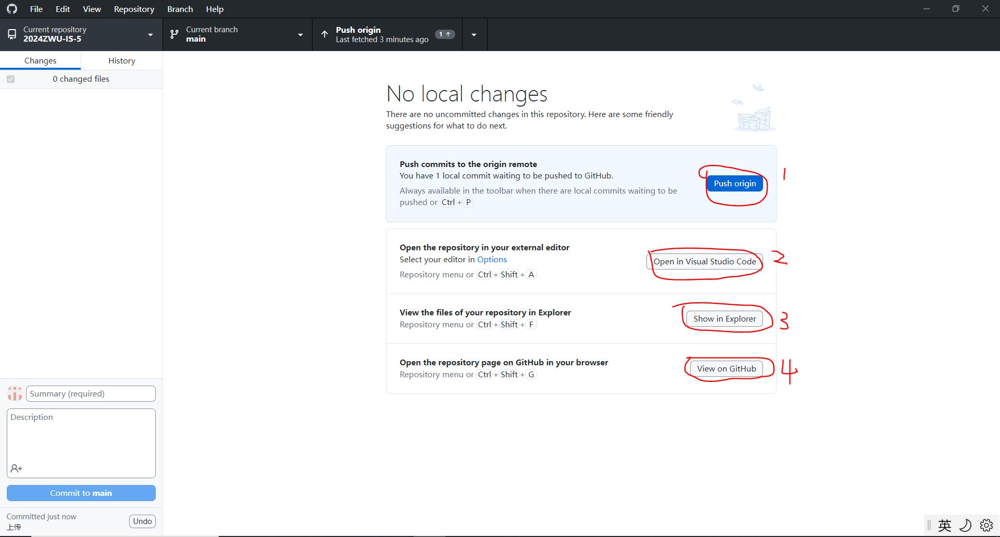